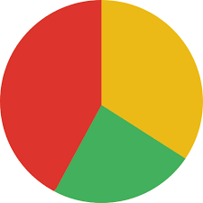
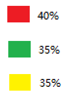

These areas are in Victoria and the idea for the website is to have very quick, user friendly and informative information for people to help minimise COVID-19 for themselves and others around them in their local community. The website will be designed as a tool for people to use as a resource to get current data of COVID-19. Daily data from Melbourne and surrounding suburbs can be shown. COVID-19 new cases, current cases, deaths, recoveries and people in Intensive Care.
We can get data from this website (either dynamically or we can construct our own database for this exercise). https://www.covid19data.com.au/
This website has national and Victorian categories.
We can compare data on a national and state level looking at:
Confirmed cases today
Confirmed cases yesterday
Recoveries
Deaths
This information can be captured in several ways. We can have a small summary of data available at the top of the screen or window. This information can be shown in graph form and this would either be on its own page of corresponding data or be placed further down on the home page. This can evolve through more developing the content of the site as a group. Here is a link on embedding interactive COVID-19 maps, but may not be as local as the website requires.
Features
Minimum Viable Feature 3: Chatbot
The chatbot will be used to answer people’s frequently asked questions about COVID-19. Some areas that the chatbot will cover are: ‘About COVID-19’, ‘Staying Safe from COVID-19’, ‘Testing’ and ‘Restrictions’. All the information will be sourced from Government websites such as Health NSW and Department of Health and Human Services.
We decided to implement this feature on our website to help Victorians understand what COVID-19 is and what can be done during restriction periods. The purpose of the chatbot is to provide Victorians with an interactive and comprehensive tool, which can quickly answer their questions about COVID-19 in Victoria. This feature will be tested for validation by inputting questions and key words and see if the chatbot outputs the expected answers or provides relevant links.
User Stories
As a student,
I want to know where I can get tested for COVID-19,
So I know where to go just in case I develop symptoms.
As a parent,
I want to know how I can stay safe during this pandemic
So I can teach my family safe.
As an elderly citizen,
I want to know what the most common symptoms of COVID-19 are
So I know when I should get tested.
As a business-owner,
I want to know what COVID-19 is,
So I can implement safety procedures within my workplace.
Minimum Viable Feature 5: RSS Feeds
The RSS Feed will provide real-time information about COVID-19 in Victoria. There will be two feeds: The twitter feed will present tweets from accounts such as VicGovDHHS, COVID-19 Australia, Victorian Government and COVID-19 Victoria. The other feed will present updates from Official Government Websites such as
DHHS Victoria,
covid19data and
NSW Health Australia.
Our group decided to implement this feature we believe it is important to keep Victorians with the right information at the right time. With many media platforms providing news about COVID-19, we wanted to simplify it by providing a single platform where they can view all real-time updates about COVID-19. This feature will be tested for validation by observing whether it shows articles from the expected sources and see if the feed updates minutes after the article being posted.
User Stories
As a full-time student,
I want to know the changes in restrictions,
So that I know when I might be going back to University.
As a doctor,
I want to see new discoveries regarding COVID-19,
So I am informed when treating my patients.
Extended Feature 1:
This feature is an extension to the RSS Feed discussed earlier. Its main purpose here is to provide users with the option to show information which are relevant to their area. This feature will be tested for validation by inputting a set of parameters (location or preferred accounts) into the RSS Feed settings and observing if the Feeds outputs the relevant articles.
Minimum Viable Features (MVF)
Extended Viable Features (EVF)
MVF1: Interactive Map
[Description of validation test]
MVF2: COVID-19 Cases Presentation
[Description of validation test]
MVF3: Chatbot
[Description of validation test]
MVF 4: Trend Forecast
[Description of validation test]
MVF 5: RSS Feed
[Description of validation test]
EVF1:
[Description of validation test]
EVF2:
[Description of validation test]
EVF.3
[Description of validation test]
MVF2 COVID-19 Cases Presentation
Heading
We consider common problems that may be encountered.The main goal of the function is to allow users to more intuitively observe the changes in daily data.This is an extension for our interactive map.
Description
What is it This feature will be used to present data that cannot be shown on the table. Here, we can show the total number of cases, total number of deaths, amount of people tested, amount of active cases, recoveries etc. This set of data will be updated daily, like our interactive map. We can present this in the form of a graph, or just a table even.
Use what-if statements to make judgments and feedback data
Steps:
1:We set the variables we need through javascript
2:According to the percentage change, we use different colors to indicate different levels
3:We will estimate whether the virus will bring more cases and the possible end date based on changes in daily data
4:We set up a table and a pie chart, this purpose can intuitively let users understand the degree of harm of the situation, for example, red represents crisis, green represents safety


Purpose
The purpose is to express that the interactive map cannot represent the information data. We create a pie chart or a data map through different colors to allow users to more intuitively observe information such as changes in the number of infections and deaths in different regions. At the same time, it can give users a trend of virus case changes.
User Stories
As a student, I want to know if there are any infection cases near my campus, so that I can consider whether to apply for online classes
As an Uber driver, I can know which area is severely affected by COVID-19, so that I can avoid driving there
As a reporter, I can know the daily number of infections across the country, so I can organize reports and publish
Tools:
1: In terms of technology, we are using visual studio code to operate.
2: In terms of communication, we are using Microsoft team.
MVF4 COVID-19 Trend
Description
A lot of people feel like COVID-19 is an endless rabbit hole. No one knows when it will end, and some people do not always trust the governments’ actions. Experts also need certain ways to predict the best measurements that the government can implement.
COVID-19 Trends allows the users to choose different measurements/no actions at all etc to see how the pandemic will last and how effective certain measurements can be. Users can also choose if a certain area has reduced a certain percentage (25%, 50% or 75%) of infected cases, how things will turn out. Thus, citizens would gain more trust with government actions and experts can also use this as a consideration when recommending government what actions to take.
For now, we decide to make the estimations based on the R0, population density and effectiveness of the measurements. R0 means patient zero, and it leads to a certain infection chain, for example, if R0 can infect 3 people based on high population density, every patient they infect can pass on the transmission onto another 3 patients. Let’s say if the government implements a lockdown, population density will be reduced, and the infection rate can be reduced let’s say from 3 down to 1 then the outcome will be totally different. These are just some basic ideas. Our algorithm can change as we implement the system.
User Stories
Arisa Sonohara is a university student who is depressed about the current COVID-19 situation as she has no idea when the pandemic will end and she’s unsure if the new restrictions can improve the future. Thus, she can use COVID-19 Trend to make predictions for the future. Once she sees some estimated outcomes, she feels more relieved and more confident with life.
James Whistler is a health expert working in the Australian Department of Health and he wants to give advices to the Australian government of what actions to take based on the current situation of COVID-19. COVID-19 Trend can help him decide with more reliable and useful ideas for the government.
Project Motivation
The idea of this website is driven by the negative impact of COVID-19 on Victorians today. The pandemic has caused many Victorians to feel confused and overwhelmed with the many changes and events that took place. Here, we want to create a platform where we provide Victorians with the right information, at the right time about COVID-19. Doing so will allow us to show Victorians how they can keep their loved ones and themselves safe and stay informed about what is happening around them.
Project Justification
Justified Workload
Beyond Current Capabilities
The development of a COVID-19 Tracker Website involves implementing intermediate to advanced HTML, CSS and JavaScript skills and creating a functional database. This project will a challenge for many of us to accomplish, as most members are first-year Information Technology (IT) students. Ultimately, the team will expand on their programming skills, website programming skills and design and knowledge of database by participating and fulfilling the scope of the project.